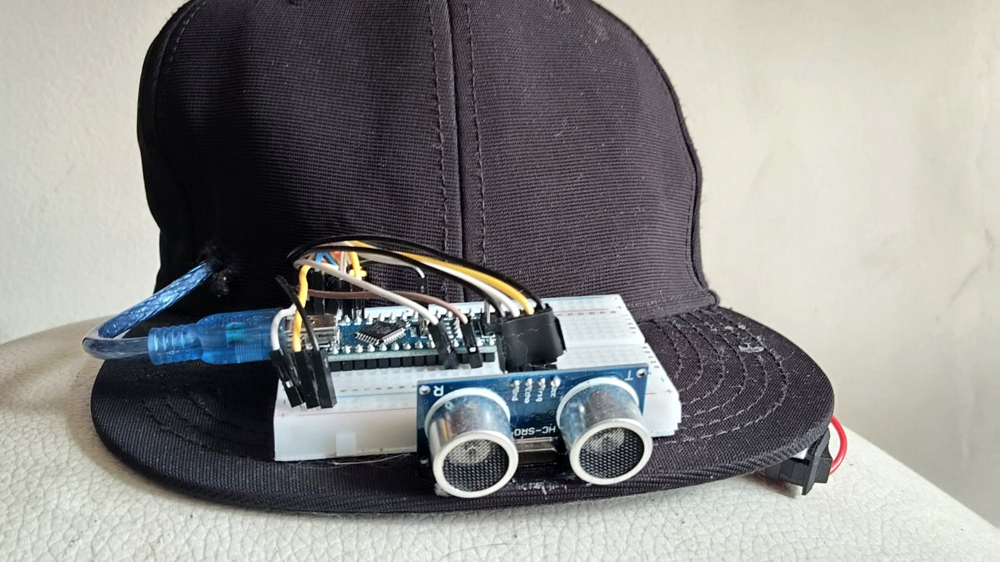
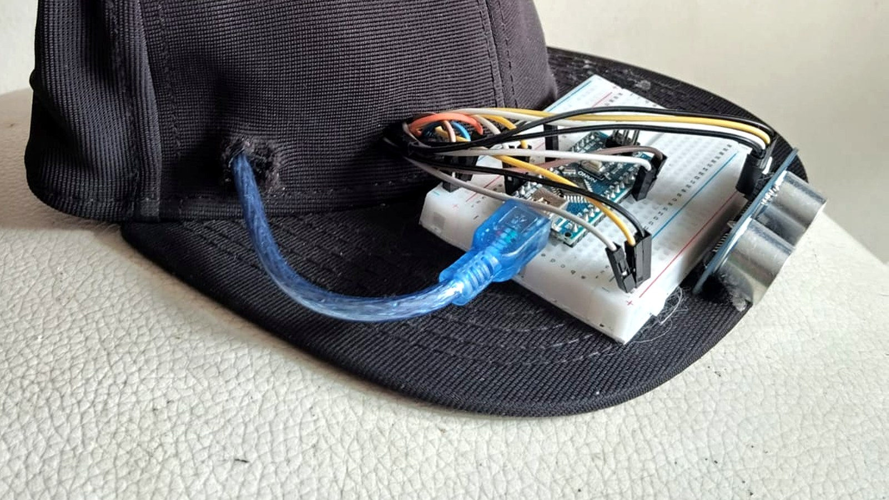

01 / CONTEXTOQué construimos
ViSync está hecho para personas ciegas y con baja visión. Son tres módulos: una gorra con sensor ultrasónico que convierte obstáculos en vibración, una app de emergencias que se activa acercando el teléfono a un punto NFC, y una interfaz Braille expandida.
Cada módulo atiende una necesidad distinta y ninguno depende de los otros para funcionar.

02 / EL RETODiseñar para quien no ve la pantalla
Nunca habíamos diseñado para personas ciegas. Todos los proyectos anteriores partían del mismo supuesto, que hay alguien mirando una pantalla. Acá ese supuesto no existía y tocaba desarmar la forma en que uno diseña por defecto.
Eso fue lo difícil. No la parte técnica, sino aceptar que casi todo lo que uno da por sentado sobre una interfaz viene de asumir que alguien la está mirando.
Investigando también nos topamos con algo incómodo. La palabra inclusión se usa mucho, pero buena parte de lo que se llama diseño inclusivo termina dejando por fuera justo a quienes más lo necesitan. Se diseña para el promedio, se le pone la etiqueta y ahí queda.
Lo que encontramos
Las entrevistas terminaron de cambiar el rumbo. Llegamos pensando en un dispositivo y encontramos necesidades separadas que no tenían por qué resolverse con el mismo aparato. Moverse sin chocar, poder pedir ayuda rápido y leer sin depender de nadie son tres cosas con lógicas distintas.
03 / DECISIÓNTres módulos en vez de un aparato para todo
La tentación era juntarlo todo en un solo dispositivo. Decidimos no hacerlo. Un aparato multiuso habría resuelto las tres cosas a medias y habría sido más difícil de usar que tres piezas simples.
Gorra ultrasónica háptica
Detecta obstáculos y responde con vibración. Cubre la zona alta que el bastón no alcanza, que es justamente donde están las ramas, los avisos y los bordes de las puertas.
App con activación NFC
Acercar el teléfono al punto NFC dispara todo: abre la app, toma la ubicación y manda un mensaje de WhatsApp al contacto guardado. Acercar dos objetos es una acción que se completa sin ver, cosa que no pasa con buscar un botón en pantalla.
Interfaz Braille expandida
Acceso autónomo a información escrita, con varios modos de navegación, para que la persona no necesite a alguien que vea.
Lo que comparten los tres es que están pensados para el tacto y el oído. El NFC funciona porque acercar es una acción táctil. El Braille es el canal de lectura propio. Y la vibración existe porque el oído ya está trabajando: alguien que camina por la calle lo está usando para orientarse, y meterle sonidos encima compite con eso.

Lo técnico
El hardware corre sobre Arduino Leonardo y UNO con un módulo NFC. Lo que más costó no fue el sensado, fue el módulo de emergencia.
La idea era que un solo gesto disparara una cadena completa: acercar el teléfono al punto NFC, que eso abra la app, que la app tome la ubicación, y que con el número guardado arme y envíe el mensaje por WhatsApp de forma automática.
Cada eslabón por separado es sencillo. Encadenarlos no. El NFC tiene que emitir un patrón codificado que el teléfono interprete correctamente, la app tiene que arrancar y pedir la ubicación sin que nadie toque nada, y el mensaje tiene que salir armado con esa ubicación adentro. Si un paso falla, la persona se queda esperando un mensaje que nunca salió, que es justo el escenario que el módulo debía evitar.
Diseñar para que no haya pasos manuales fue el requisito que hizo difícil la implementación, pero era innegociable: alguien en emergencia no va a navegar una interfaz.
Probarlo con quien lo va a usar
Llevamos el prototipo a prueba con personas ciegas y con baja visión. No con compañeros de clase con los ojos vendados, que es lo que suele pasar en proyectos de universidad y no sirve: alguien que ve todos los días no navega igual que quien lleva años haciéndolo sin ver.
04 / SIGUIENTE ITERACIÓNQué cambiaría
La gorra es incómoda. Pesa más de lo que debería y se siente engorrosa después de un rato, que es exactamente lo contrario de lo que necesita alguien que va a usarla todos los días.
Y hay un problema que no es técnico. En Bogotá, andar por la calle con un Arduino visible encima de la cabeza es un riesgo de seguridad. El dispositivo llama la atención sobre alguien que ya está en una posición vulnerable. Eso no lo resolvimos, y no se arregla ajustando el sensor: obliga a repensar la forma, el material y qué tan visible es el aparato.
La siguiente versión parte de un requisito que en la primera tratamos como acabado: el dispositivo tiene que desaparecer dentro de la prenda. Componentes integrados en vez de protoboard, batería distribuida en el ala para repartir el peso, y cero electrónica a la vista.
Eso no es un detalle de forma. Un dispositivo de asistencia que llama la atención sobre quien lo usa deja de asistir.
05 / CIERRELo que me llevé
Los tres módulos quedaron funcionando y alcanzamos a probarlos con personas ciegas y con baja visión, que era la meta desde el principio. Ver a alguien usar algo que diseñamos para su forma de moverse por el mundo, y que además nos dijera qué servía y qué no, fue la parte del proyecto que más me marcó.
Lo otro que me llevé fue el tema de la inclusión. Es una palabra que se usa mucho y que en la práctica muchas veces significa diseñar para el promedio y ponerle una etiqueta encima. Trabajar directamente con personas que quedan por fuera de ese promedio cambió cómo evalúo un proyecto: la pregunta dejó de ser si la solución funciona y pasó a ser para quién funciona, y a costa de quién.
Me interesa seguir trabajando en accesibilidad. Es de las pocas áreas del diseño donde una decisión mediocre no produce una experiencia mediocre, produce una barrera.
Contacto
Estoy buscando práctica profesional y roles junior en diseño de interacción, UX, sistemas de juego y QA. Bogotá o remoto.
Siguiente proyecto